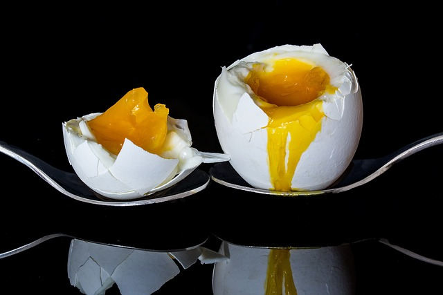

Boiled Eggs

Time(s):
Soft - 3 to 4 minutes
Medium - 5 to 6 min.
Hard - 10 to 15 min.
Use a pin or needle to poke a hole in the broad end of each egg.
Cook for the desired time, then run the egg very briefly under cold water before serving.
Home